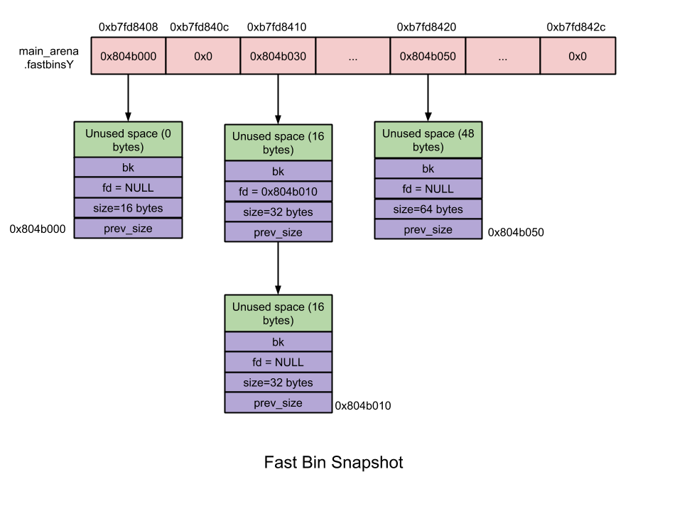
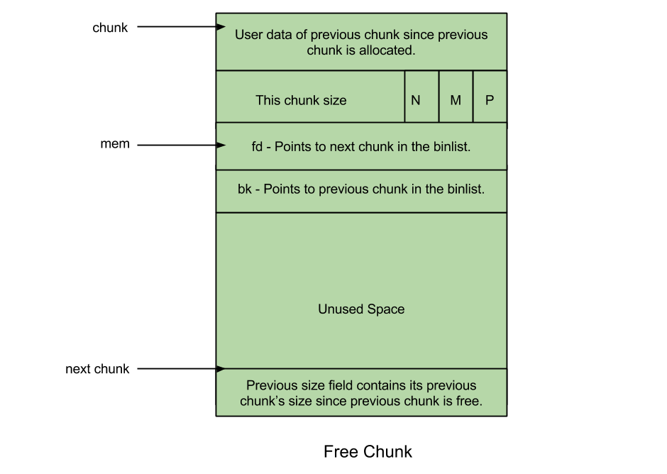

3 Important Structure in Glibc Malloc
Contents
data structure in malloc
malloc_state(arena header)
- CODE
|
|
- BINS
|
|

- FASTBIN示意图*

关于FASTBIN和UNSORTED BIN的一点理解
Fastbin采用LIFO的方式(因为FASTBIN只维护一个HEAD指针), 通过将PREV_INUSE位置1, fastbin中的chunk从不合并.
Unsorted bin采用FIFO的方式, unsorted bin里的chunk大小不一, 每个chunk都有一次重新分配的机会, 当轮到一个chunk的时候, 先检查该chunk是否符合条件, 若符合, 则malloc该chunk, 若不符合, 则将该chunk放回到与其大小相应的bins里面.
heap_info(heap header)
|
|
malloc_chunk(chunk header)
- CODE
|
|
- FREE CHUNK

ALLOCATED CHUNK

heap示意图